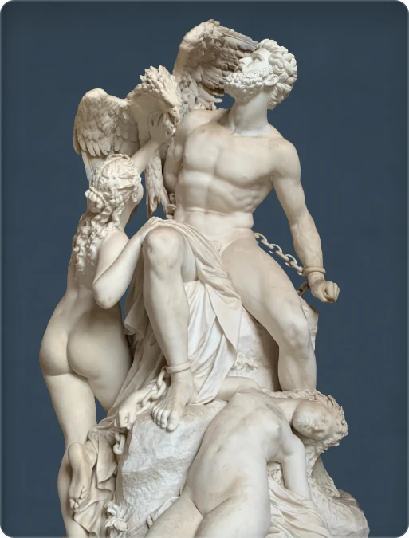

Prometheus

The Oceanids gather around the chained Titan
Prometheus is chained to a rock, surrounded by the Oceanids. The eagle and his bonds make his captivity visible, while the surrounding figures share his suffering. Eduard Müller designed the group in 1868. Commissioned in 1872, the monumental marble version was installed in Berlin’s Nationalgalerie in 1879. It is a nineteenth-century interpretation of Greek myth.
Eduard Müller · 1872–1879 · marble · Alte Nationalgalerie, Berlin
Nationalgalerie archives · I/NG 1812 (PDF) ↗
Photo credit
Photo: Montserrat Mondragón / Pexels
A body held by its chains
Prometheus’s torso rises above the rock. One knee is bent and his head tilts back. His arm reaches away from his side, ending at a wrist held in a ring. Links are visible behind his wrist. Look, too, at the restraint near his ankle. The eye moves from a limb that seems ready to move to the point that holds it in place. The restraints make his captivity clear even before we recognise the figure.
The eagle and the Oceanids
A spread wing fills the upper part of the group beside the upturned head. Lower down, one Oceanid approaches the raised knee and rests a hand on the drapery. Another lowers her head near the base of the rock. The eye moves from the threatening closeness of the eagle to the responses of the Oceanids. The resting hand and lowered head suggest different ways of sharing the Titan’s pain and draw attention back to the central figure.
Different surfaces in the same marble
Light follows the curves of Prometheus’s chest. Around him, it catches the edges of feathers, the folds of fabric and the rough surfaces of the rock. Follow the light from one detail to the next to see how the body stands out among the irregular forms that surround it. The drapery also connects the figures, running from the raised knee down into the group below. The shadows between individual feathers and between the links make the outlines of the eagle and the chain easy to pick out in the photograph.
A nineteenth-century retelling
Prometheus belongs to Greek myth. The dates in the artwork record place Eduard Müller’s marble group in the nineteenth century. Müller brings the captive, the eagle and the figures who witness his suffering together in the same group. The space he gives to each helps us read his interpretation of the episode. The dates of the commission and installation help trace the making of this larger version of the group.